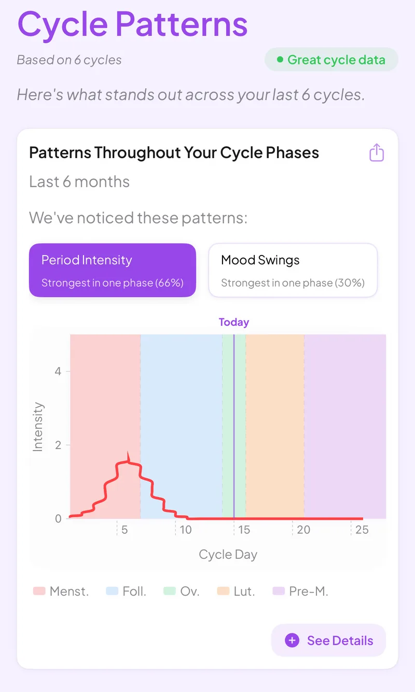

How Veya's cycle predictions work
Veya predicts from your own history instead of a 28-day template. You get a most-likely day and a range around it, because real cycles drift a little from month to month.
Download VeyaNot on iPhone? Try it in the browser at app.myveya.com.

On a computer?
Scan to download on your phone.

From your dates to a range
With a single period date, the starting method is simple. Take the first day of your last period, add your usual cycle length, and that is the most-likely start. A few days either side show the range.
Add earlier period dates and the range comes from your own cycles. Recent cycles count for more, with a cycle from about three and a half months ago counting half as much as one from this month. An unusually long or short cycle gets less pull. Steady dates give a tight range, and dates that move around give a wider one.
The fertile window is an estimate
Veya places ovulation by scaling the luteal phase to your cycle length instead of assuming 14 days for everyone. The fertile window runs from five days before the estimated ovulation day to one day after.
As you log more, the app can use more signals, like ovulation tests, temperature and confirmed ovulation, which a date-only calculator can't see. You can try the date method yourself in the period calculator.
What changes a prediction
- Irregular cycles widen the range, because there is no steady average to project from.
- Stress, illness, travel and sleep changes can shift ovulation, which moves your period with it.
- Your first cycles are the roughest, since there is less of your history to learn from.
- After stopping hormonal birth control, while breastfeeding and during perimenopause, cycles are harder to predict in any app.
- Wearable temperature can narrow the estimate, but it is still an indirect signal.
What predictions are not
A prediction is an estimate from your data. It isn't a diagnosis, and it isn't birth control. Veya can't tell you which days are safe. For more on how accuracy varies by method, see how accurate period tracker apps are and why your tracker can be wrong.
Frequently asked questions
Let Veya learn your cycle
Log a few cycles and watch the range settle around your own pattern.
Download VeyaNot on iPhone? Use the web app in any browser.
Related pages
Veya in your browser · Your data and privacy · Cycle syncing · All conditions